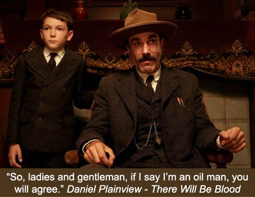

Who is John Mark Karr?
Since nobody gives a damn about anything in my life but my criminal record, I'll focus solely on that here for all intents and purposes. It's a pity because I've certainly had many years of life experiences aside from that.
In 2006, I was arrested for the murder, kidnapping, and sex assault of six year old JonBenet Ramsey and extradited from Bangkok to Boulder Colorado. My arrest was based on my account of the night of her death that corroborated with physical evidence withheld from the public by the coroner and law enforcement from 1996 to 2006.
I was ultimately discounted as a lying, lunatic, attention seeking whore. How could a person who had been in hiding for five years and using a pseudonym with his informants manage to cash in on this fame? After all, I did not turn myself in. I didn’t phone CNN. I didn’t turn myself in when I was last in Boulder in 2000. I didn’t cash in on all that supposed fame for ten damned years but I was an attention seeking whore? If I became notorious, it was thrust upon me against my will by the media who showed up like a pack of hungry wolves. So I am to blame for something I didn’t do? Wouldn’t be the first time.
The prosecution finally said she didn’t bring me back on charges at all though strangely, I attended an extradition hearing in a packed, media covered Los Angeles California courtroom where a judge read off all five of the charges in Colorado and asked if I wanted to waive to extradition on those five charges. He read the charges individually. They included such terms as murder in the first degree, kidnapping, and sex assault. I assure you, Ms. Lacy, the charges were real.

I was last questioned by private detectives regarding the Ramsey case in 2009 with light contact from private detectives in 2014 but with no questions about the Ramsey case. As of the end of 2016, I have been in contact with a past agent of the CBI about this case.
After my release from the Ramsey case charges in 2006, I was extradited from Colorado to California on 2001 charges of alleged possession of child pornography.
Rewind to the year 2001. I had just moved with my wife and three sons to California one year prior. I had worked in a prestigious school for girls in San Francisco and ultimately was working on my Masters of Elementary of Education degree, doing a teaching internship at a school in beautiful Napa Valley California. Every morning, I drove my classic Jaguar through famous vineyards to get to my little elementary school in paradise. One day, in the middle of a lesson with my fourth grade classroom, the principal came for me. Waiting in the office of the school were two Napa Valley detectives. My life would never be the same again. I would lose my wife and kids, my career, and my country in a matter of six months.

In Sonoma County, I was investigated for the murder of a twelve year old Santa Rosa girl named Georgia Moses. She was said to have had an intense sense of humor much like another twelve year old girl in the area, Polly Klaas. She was from Georgia. Oddly enough, as a young man working for my father, I rented an apartment in Atlanta to a large African American family by the last name Moses.
The girl’s remains were found a fifteen minute walk from my Petaluma home, wrapped in a piece of carpet and left on the shoulder of Highway 101. Of course, I lived in Petaluma years after her body was discovered; however, it was thought by authorities that I had returned to the scene of my own crime for nostalgic and sentimental reasons.
When the Moses murder couldn’t be pinned on me, I was ultimately arrested for alleged possession of child pornography. It might be interesting to note that the prosecution’s hired photographic, age analysis experts could not determine that persons in the five images were under their upper teens in age. If you’re conjuring up images of little six year old girls naked, think again. The images were shown to me by my attorney. They were so blurry, one was hard pressed to assume they were human. One of my attorneys said of one of the images, “is that a close up of a Bartlett pear?”
While locked up in semi-solitary confinement for six months with my only chance of release, a $100,000 bail, I was investigated by the FBI for the murders of unnamed little girls particularly in the states of California, Alabama and Georgia, according to Sonoma County prosecution and police records. At every court hearing for the six months I was in jail, the prosecution consistently brought up the status of the FBI’s investigation, saying to the judge that they were in constant contact with the FBI.
At the end of a grueling six months confinement, the prosecution stated to the judge that they had spoken to the FBI who informed them that their investigation of Karr was over. The prosecution then stated in the same court hearing that, at that point, they had no further interest in holding me incarcerated and accepted the terms of releasing me on my own recognizances.
After my release, I attended two court hearings. My defense presented to the judge that the computer in question was obtained without a search warrant further stating that, though there was a warrant for one of my California homes, there was not a search warrant of the other of my homes where the computer against me was retrieved. The judge instantly said that he thought law enforcement, in his words, ‘jumped the gun’ on retrieving this computer and should have gotten a legal search warrant. The case was almost dismissed until the prosecution spoke up that they needed a chance to tell the judge the intensity of the case - that this was much more serious and involved than just porn charges. The judge said ‘very well’ and the next hearing was scheduled a few weeks later. At the next hearing, the judge said that he had heard what the prosecution had to say and had decided that he would allow the evidence even though it had been found without a search warrant.
I was completely disillusioned with the legal system in Sonoma County. My constitutional rights were completely violated. I felt I would never get a fair trial in a place where evidence found without a search warrant was permitted. That, coupled with the fact that I was on the radar of the FBI for the first time in my life, prompted me to leave America once and for all.
On a rainy November night in 2001, I boarded a plane in San Francisco bound for London. I would remain out of America for five years until my 2006 arrest. My family thought me to be dead.
Return now to 2006 when I was returned to Sonoma County to once again face these charges. During the hearings, the prosecution said that there was a tape drive supposedly found in a box near my evidence therefore it had to be mine. Such logic reminded me of 2001 when a judge said search warrants were unimportant. The prosecution said there were 16,000 images of child porn on that tape drive. Of course this drive did not belong to me but my lawyers and I played along.

My lawyer came to me and said, “The prosecution showed me hundreds of the 16,000 porn images. Guess what the images are of? Little boys. All of them are little boys.” And I thought John Mark Karr was supposed to be a sick pedo attracted to little girls? This matter kind of fizzled out. I think the prosecution knew they were in above their heads trying to first prove the drive belonged to me and secondly prove that I would have interest in child pornography of little boys.
Much to my amazement, one day my lawyers came to me and said the media had leaked to them that the computers held in evidence against me had been lost by the sheriff’s department in a move from an old evidence room to a new one. It seems that there were thousands of pieces of evidence moved but mine was the only evidence lost. I was released from all charges based on lack of evidence.
In reality, the sheriff’s department lost evidence that was found on a hard drive discovered without a search warrant; consisted of five deleted images; was located on a broken hard drive never operated in the state of California; and contained images that the prosecution’s experts could not determine was child pornography.
My lawyers were disappointed that the case did not go to trial so they could bury this bogus case against me once and for all. My lawyers did not consider the dropped charges as a victory.
After my release in Sonoma County California, I moved to Atlanta. In the months that followed in the same year, I was investigated by the Department of Homeland Security for international child sex trafficking, international child molestation and international murder of children. I was harassed by a neighborhood civic organization that sent out 2,000 letters to residents warning them of the threat - John Mark Karr. I was treated like a sex offender. I was harassed by hordes of law enforcement who would show up with lights flashing even for the mere sitting on a park bench overlooking a golf course in the middle of the day. My life was a living hell. I would not be able to remain in America for long.

In 2007, I was arrested for the battery of my elderly father, Wex Karr. In reality, Wex Karr was holding me against my bedroom wall by the throat. I struggled to release his two very strong hands from my throat which might have possibly left marks on his arm. Brooke Dovgan was a witness to all this and reported it to the police that night.
Earlier that week, my father came into the house with a black eye and told Brooke Dovgan and me that he’d run into a tree limb. I’m sure police blamed his black eye on me as well.
Charges included the prevention of a 911 call. In reality, I merely requested that my father not call the police in reaction to an argument I was in at the time with my then girlfriend, Brooke Dovgan. I did not threaten him in any way. I pleaded with him not to create something major over something trivial. Wex Karr became very angry and threw his own phone down a hallway, hitting the walls and breaking his phone. When police arrived, I was blamed for the broken phone.
In the end, I was ordered to attend anger management classes by a judge after pleading no contest to the charges which, again, was a huge blunder on my part and based on flimsy advice from an attorney. I covered for Wex Karr for the mere fact that I had no place to go and nowhere to live. I look back on it now and wish I’d checked into a homeless shelter and let the world know what really happened to me. All charges were dropped against Wex Karr. Go figure. The charges against me were expunged, for the little that is worth.
In 2007, I was investigated by the FBI for the organization of a sex cult involving teenage girls. A computer was confiscated out of state - not one of my own and not from any of my past residences. The case fizzled out due to lack of evidence. Little did I know, the sex cult investigation would rear its ugly head yet again in 2010.

It was in that same year that Seung Cho murdered 33 students at Virginia Tech. In his final manifesto, thought to be written during the killings, Cho mentioned me on page 16 stating, "You wanna rape us, John Mark Karr's? Fuck you!" My heart was broken when I heard about this. My fears were confirmed that mass murderers like Cho had me on their minds. I was reminded how very dangerous it was for me to remain in the U.S.
Some have even scoffed at my fearful reaction to Cho's statement in his final manifesto saying, "But Cho is dead now and can't hurt you." A grim reminder of Cho's manifesto resurfaced on August 26, 2015 when WDBJ-TV reporter Alison Parker and cameraman Adam Ward were shot to death during a live interview in Moneta, Virginia by a past fellow journalist, Vester Lee Flanagan aka Bryce Williams. Flanagan also wrote a final manifesto and in it he said: "Also, I was influenced by Seung-Hui Cho. That's my boy right there. He got NEARLY double the amount that Eric Harris and Dylan Klebold got…just sayin'."
My desire to once again have some semblance of privacy and protection reached a point of desperation in 2008 when the name John Mark Karr was legally changed to Alexis Valoran Reich. The attempt was futile. In 2010, the name was sold to the tabloids in an exclusive interview in the National Enquirer with Brooke Dovgan. The person accused of wanting attention was exposed against his will once more. The name was turned into a dot com and served as a tracking device. The John Mark Karr entry at Wikipedia was vacated and changed to Alexis Valoran Reich for the same purposes. Wikipedia has since removed all main entries for either name.

I was accused by my enemies of changing my sex to get a better chance of getting closer to little girls. What a load of shit that was. For years, I had worked with thousands of little girls as John Mark Karr the man. How many transgender elementary school teachers work at your children's school? How many transgender nannies are there in England? Such a transition would have buried all chances of me getting a job working with little girls. I was merely trying to survive. My enemies made certain my hell would be perpetual.
I did not come out to the world as a transgender. I was instead and once again tossed to the media wolves to be devoured. There was no front cover of Vanity Fair. There was no media talking about how beautiful I was. There was no public outpouring of understanding and desire to learn more about crossing over to another gender for me. The American media was vicious. I was mocked. I was ridiculed. I was publicly crucified.
In the same 2010 year, I was investigated by the San Francisco Police Department and other branches of law enforcement for the alleged organization and leadership of a murderous cult alleged to abduct little girls for sex. I was accused of threatening the life of a nineteen year old Samantha Spiegel for her exposure of the activities of the alleged sex cult. Spiegel claimed to be one of my past students though she was in a totally different grade from the one I worked with in San Francisco. She told one lie after another about me from saying that I led a cult of JonBenet Ramsey look alike little girls to saying that I asked her to walk the streets of San Francisco at night seeking little girls to abduct for my sexual pleasure. The media gave her center stage to dismantle me as a human being. Read more in Lei Sussurra's article, Samantha Spiegel's Macabre Collection of Killers.

Fox News reported that there was a criminal warrant out for my arrest. Believing this ‘news’, I flew from Paris to America to face up to these charges. There never was a warrant. The DA's office in San Francisco made an official statement that they never had plans to issue a warrant out for my arrest. Instead, I was served with a restraining order. I returned to Paris in a week’s time of arriving back in America. My regrets for returning to America at all are numerous. I took risks and I suffered for the week and a half I was there. Thank God, I'm not there now.
Most of the events of 2010 revolved around the actions of a vigilante hate group that attempted to derail my life based on their lowly opinion of me and not on any evidence that I was a monster let loose on the world's children. They bought and set up websites using the names John Mark Karr and Alexis Valoran Reich that distributed Karr hate propaganda designed to trace and track me - to rank high in the Google searches for both names to tip off anyone that I was a monster who should be turned over to authorities. These crusaders to protect children from horrible monster John Mark Karr were based in America and consisted of friends, past girlfriends, and even family members. Read more in Circle of Fire's article, Anti-Karr Group.
The events of 2010 made me homeless for over two straight years. I lived a very uncomfortable and dangerous existence.
Oh, by the way, I have never been convicted of a crime. I have never been a registered sex offender.
Needless to say, I have lived outside North America since 2008. My life continues to be plagued by the threat of homelessness and outright danger. I am still sometimes recognized, no matter how remote my location, by 'angry admirers' who mostly shout at me. I would have written all this in a book that might have given me a few meals to eat and a place to live for a few nights but I've been banned by the publishing world from ever having anything published as many believe I must be silenced or, moreover, that I should not exist at all. As long as I have this dot com, I will say plenty.
Copyright 2016 All rights reserved